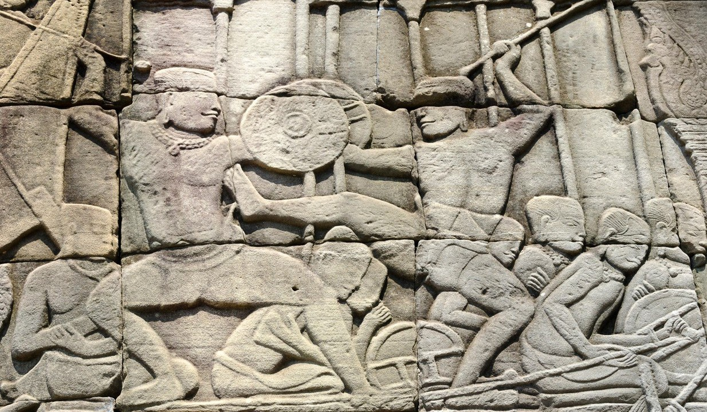

History and Origin of Mixed Martial Arts
Mixed martial arts (MMA), also known as cage fighting, is a modern combat sport whose main characteristic is the combined usage of several martial arts by the fighters. So, while MMA is an individual combat sport, the fighters actually utilize multiple martial arts and/or combat sports in MMA fights.
MMA is, today, a global phenomenon with a very large fanbase, but it wasn’t always like that. Not only has MMA’s popularity increased in recent years, but the sport is also self is relatively new; the term “mixed martial arts” was first used in 1993 by television critic Howard Rosenberg, who coined it in his review of the UFC 1 event, the first UFC event in history.
Mixed martial arts date all the way back to Ancient Greece. It originated from the sport called pankration. In the beginnings, there were no rules except no biting, no strikes to groins, and no eye-gouging.
Mixed martial arts date all the way back to Ancient Greece. It originated from the sport called pankration. In the beginnings, there were no rules except no biting, no strikes to groins, and no eye-gouging.
So, there you have it – mixed martial arts in the modern sense of the word haven’t been around for more than 30 years, but is it possible that the idea is really that new? Of course not.
First Mixed Martial Art
Mixed martial arts originated as mixed combat sports in Ancient China and Ancient Greece.
The Chinese combat sport of Leitai is one of the first mixed combat sports and utilized elements of different kung fu styles, boxing, and wrestling.
In Ancient Greece, such an example can be found in the art of pankration, a very specific martial art that combined boxing (which was very popular in Ancient Greece) and wrestling (which probably originated in Mesopotamia or Ancient Egypt).
Pankration was extremely popular (even the most popular sport, according to some historian) in Ancient Greece and there is vague evidence that similar mixed combat sports were practiced in Ancient Japan, Egypt and India.
When Was MMA Invented?
Although mixed combat sports originated in Antiquity, it wasn’t until the mid-19th century that these sports resurfaced and started gaining popularity.
Despite the 19th century being a crucial period for the development of modern forms of many individual martial arts and combat sports, many fighters wanted to combine multiple styles and techniques and challenge the traditional systems that were in development in that period.
This resulted in the creation of a large number of mixed combat sports in that period, most of which have either faded away or have been incorporated into other, modern mixed combat styles and sports.
What Is the First True MMA?
One of the first examples of such sports was the French combat sport called savate, which was established around the 1850s. The savateurs wanted to combine multiple martial arts and combat sports into one discipline, using it to challenge the traditionalist views of individual sports.
A tournament between French savateurs and English bare-knuckle boxers was held in 1852 and although the savateurs won the first fight thanks to the use of kicks, they ultimately lost the remaining four.
Catch wrestling appeared in the late 19th century and was popular for a while.This sport greatly influenced modern MMA, but was, itself, a blend of several very different wrestling styles from around the world.